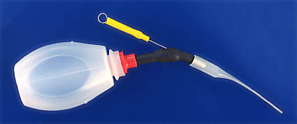

|

This ingenious device is a precision glue applicator that was given to me by the late Harry G. Geyer. The extremely fine tip will deliver a drop of glue to your model exactly as you want. The Micro Cementeur is designed to work with thinned water or solvent based adhesives. It is not suitable for CA type glues.
If you build indoor models and care about weight, this goody or something similar is a "must have" addition to your building bench. I know others use a syringe with good results.
|
Copyright 2009, Thayer Syme. All rights reserved